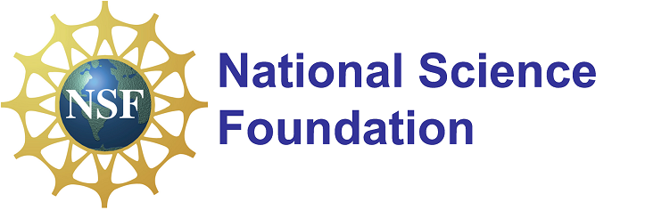

Sponsor (Acknowlegement of Support)
Any opinions, findings, and conclusions or recommendations expressed in this project are those of the author(s) and do not necessarily reflect the views of the National Science Foundation.

Award Information
Award Title: Collaborative Research: CSR: Small: Accurate and Private Multi-Camera Surveillance System on Time-Sensitive Networks
Award Duration: 04/15/2025-03/31/2028 (Estimated)
Total Award Amount: ~$600,000
Project Abstract
The rapid growth of smart cities necessitates advanced solutions to improve traffic mobility and public safety. This project proposes a novel multi-camera surveillance system, leveraging a network of distributed smart cameras to capture and analyze streaming video data in real time. By combining the computational power of edge devices and the cloud, this system intelligently processes video streams to address challenges in smart city applications. The project emphasizes privacy-preserving techniques to ensure sensitive information, such as images of pedestrians and vehicles, is protected while fostering scalable, efficient, and resilient real-time systems. It bridges research domains in systems and networking, machine learning, computer vision, and security and privacy, creating a unified framework for advancing smart city infrastructures.
The project delivers transformative contributions across multiple domains. It introduces innovative unsupervised learning models for tasks such as human and object re-identification and tracking, enabling accurate and efficient analytics in distributed, real-time systems. A novel real-time and resilient cyberinfrastructure is designed with full-stack configurability, addressing system scalability and network performance challenges for large-scale deployments. Additionally, lightweight cryptographic systems combining advanced cryptographic primitives and Trusted Execution Environments (TEEs) enable privacy-preserving computation for sensitive video data. Beyond technological contributions, the project promotes societal benefits by improving urban services, fostering public trust in privacy-conscious surveillance, and training a new generation of students with skills critical to the systems, networking, data science, and cybersecurity industries.
Team Members
Lead PI: Yuan Hong
Co-PIs: Song Han and Yan Yan
Ph.D. Students: Ali Arastehfard, Md Rayhanul Islam, and Changchang Sun
Related Publications
Research Products (Student Advisee):
-
[NSDI ’26] Chuanyu Xue, Tianyu Zhang, Andrew Loveless, Song Han.
KeepON: Supporting Deterministic Traffic on Standard NICs.
23rd USENIX Symposium on Network Systems Design and Implementation (NSDI), 2026.
Code -
[CODASPY ’25] Bingyu Liu, Ali Arastehfard, Rujia Wang, Weiran Liu, Zhongjie Ba, Shanglin Zhou, Yuan Hong.
Secure and Efficient Video Inferences with Compressed 3-Dimensional Deep Neural Networks.
15th ACM Conference on Data and Application Security and Privacy (CODASPY), 2025.
Code -
[CCS ’25] Qin Yang, Nicholas Stout, Meisam Mohammady, Han Wang, Ayesha Samreen, Christopher Quinn, Yan Yan, Ashish Kundu, Yuan Hong.
PLRV-O: Advancing Differentially Private Deep Learning via Privacy Loss Random Variable Optimization.
32nd ACM Conference on Computer and Communications Security (CCS), 2025.
Code -
[BMVC ’25] Nikhil Sharma, Jiachen Tao, Junyi Wu, Yan Yan.
DepthHMR: Leveraging Depth Around Humans for Multi-Human Mesh Generation.
British Machine Vision Conference (BMVC), 2025. -
[ICLR ’26] Feiran Wang, Junyi Wu, Dawen Cai, Yuan Hong, Yan Yan.
CogniMap3D: Cognitive 3D Mapping and Rapid Retrieval.
International Conference on Learning Representations (ICLR), 2026.